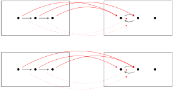
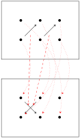

In this exercise, \(B = \boxed{\bullet \rightarrow \bullet \rightarrow \bullet}\) and \(C = \boxed{\bullet \leftrightarrows \bullet ~~~~ \bullet}\text{...}\)
Solution.
So lets start by showing \(B\) is not isomorphic to \(C\text{.}\) Since there are two arrows in \(B\) and two arrows in \(C\text{,}\) any map \(B \rightarrow C\) must map arrows to arrows. This means that there are only two such maps that preserve structure:

In both of these cases, the respective map takes 3 dots in \(B\) and maps them to only 2 dots in \(C\text{.}\) Since there is no retraction from \(\mathbf{2}\) to \(\mathbf{3}\text{,}\) the only two maps \(B \rightarrow C\) are non-invertible. This proves that \(B\) is not isomorphic to \(C\text{.}\)
Next, let’s look at the product \(A \times B\text{:}\)
Similarly, let’s also draw out \(A \times C\text{:}\)
In both of these cases, the product contains 2 disjoint naked arrows and 6 dots total. An isomorphism can be constructed by pairing arrows with arrows and dots with dots. One such map is shown below:

There should be 4 isomorphisms to choose from, but we only needed one. QED.